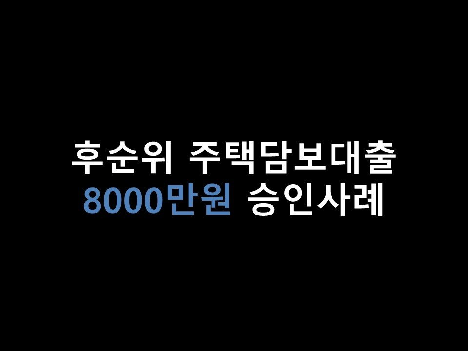

★후순위 주택담보대출 8000만원 승인사례★

안녕하세요 ~ ^^ 오늘은 주택담보대출 승인 사례를 소개해드리겠습니다~^^.
물건지는 경상남도 진주시의 한 아파트입니다. KB시세는 5억 3천만원 이었으며,
기존 선순위 대출은 농협은행 2억 9천만원, 금리는 3%대로 이용중이셨습니다.
명의자인 고객님의 조건은 사업자이셨으며, 사업기간은 5년, 올해 상반기 부가세 매출은 2억 이상이셨습니다.
신용점수는 등급으로 환산 약 7등급으로 낮으신 편이셨습니다.
고객님께서는 8000만원의 필요자금이 생기셔서 저희 뱅크앤론으로 문의를 주셨습니다.
등기부등본을 확인해보니, 건강보험공단에서 300만원 가량 압류가 등록되어있었습니다.
주택담보대출같은 경우는 압류가 크지 않은이상, 해결하면서 대출이 가능하기때문에...
크게 중점을 두지않고 금융사 여러곳에 탁감의뢰를 드렸습니다~
그 결과, 최대 1억 5200만원까지 심사가 가능하다고 답변을 받았습니다 ^^.
그러나 고객님께서 필요하신 금액은 8000만원이었기에, 최종 A사로 8000만원, 금리 10% 초반으로 진행을 도움드렸습니다 ^^.
신용점수가 좋지 않고, 건강보험공단으로부터 압류가 등재되어있었으며, 후순위로 진행하다보니.. 금리는 아무래도 올라가게 되었지만,
고객님께서는 만족해 하시며 진행을 원하셨습니다 ~^^. A사로 진행요청을 드린 결과, 상담신청 이틀만에
온전히 전액을 승인 받으실 수있게 되셨습니다 ^^. (빠르게 진행을 한다면 당일 입금도 가능한 금융사이나, 고객님께서 일이 바쁘셔서 조금 지연되었습니다.)
아래는 저와 고객님의 카카오톡 상담 내용의 일부입니다~ 참고 부탁드립니다 ^^. 감사합니다.
* 뱅크앤론 주택담보대출의 경우, 최저 금리 제도를 적용해 고객님의 조건 대비, 필요자금 대비 가장 우수한 상품을 선별하여 진행 도움드리고 있습니다 ^^.
또한, 선,후순위 담보대출 모두 금리나 한도 외에도 상환방식과 상환기간, 중도상환수수료등까지도 폭넓게 고려하여 가장 유리한 상품으로 진행 도움드리고 있습니다 ^^.
담보대출 관련해 상담을 원하시는 분들께서는 저희 뱅크앤론 상담신청란을 통해 상담신청을 남겨주시면 최선을 다해 좋은 상담 드릴 것을 약속드립니다 ^^.